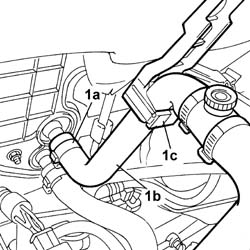
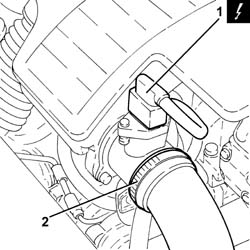
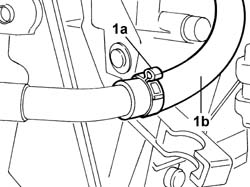
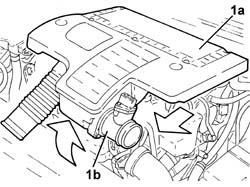
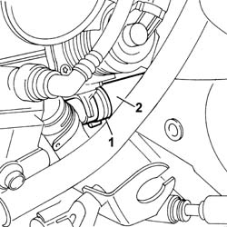
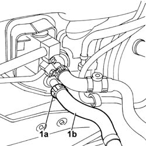

5010A12 engine/heater line - r r
- Path
- Procedures > 50 AUXILIARY UNITS > 5010 CLIMATE CONTROL - MISCELLANEOUS > 5010A heater pipes > 5010A12 engine/heater line - r r
- Kind
- repair procedure (removal / refitting; the operation number is the code)
- Applies to
- all engines; all production periods
- Interactive page
- https://sloeber94.github.io/elrnDB-fPnd/en/#/2752846
Applies to: engines: 1.1, 1.2 8v; all production periods
 Removing
Removing
 Refitting
Refitting1048A10 air cleaner filtering element - replace
Position a suitable container for collecting the engine coolant.
1. Open the fastening band (1a) and release the pipe (1b) from the mounting bracket (1c).

Applies to: engines: 1.3 JTD 16v; all production periods
Removing
RefittingDisconnect the battery negative terminal.
1. Disconnect the electrical connection from the air flow meter.
 | Name | Connector |
|---|---|---|
1 | Air flow meter | K41 |
2. Loosen the band and disconnect the the turbocharger air inlet sleeve from the rigid pipe, air flow meter side.

Applies to: engines: 1.1, 1.2 8v; all production periods
1. Open the fastening band (1a) and disconnect and remove the heater water supply pipe (1b).

Applies to: engines: 1.3 JTD 16v; all production periods
1. Remove the air filter (1a) complete with air flow meter (1b) by releasing from the underlying pins and then from the rear fastenings.

Applies to: engines: 1.1, 1.2 8v; all production periods
Refitting
RemovingFit the heater water supply pipe in place on the rigid pipe and on the heater and refit the fastening bands.
Secure the pipe to the mounting bracket.
Applies to: engines: 1.3 JTD 16v; all production periods
1. Open the fastening band (1a) and release the pipe (1b).

Applies to: engines: 1.3 JTD 16v; all production periods
1. Opening the fastening band (1a) and release the power unit coolant pipe (1b) and remove it.

Applies to: engines: 1.3 JTD 16v; all production periods
Refitting
RemovingFit the power unit coolant pipe in position.
Renew the fastening bands.
Renew the metal bands fastening the pipe to the heater and to the EGR.
0010T21 coolant check density and top up if necessary
Fit the air filter complete with air flow meter in place.
Connect the air intake sleeve to the turbocharger, air flow meter side, and tighten the band.
Connect the electrical connection to the air flow meter.
| Name | Connector |
|---|---|---|
- | Air flow meter | K41 |
Connect the battery negative terminal.